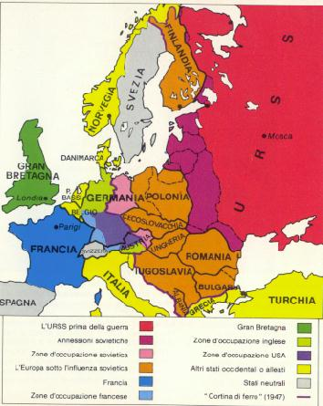

Osserva la carta dell’Europa attuale: essa appare molto diversa da quella di venti anni fa.
Europa 1945 (Atlante strategico SEI, 1986) |
Europa fine anni '90 |
|  |
Puoi notare che la Germania è riunificata e per quello che riguarda l'ex-URSS, ora accanto alla Russia, sono diventate indipendenti le repubbliche baltiche: Estonia, Lettonia e Lituania, sono comparse la Bielorussia e l'Ucraina. Nella penisola balcanica si possono notare la Slovenia, la Croazia, la Bosnia, la Yugoslavia (Serbia, Montengro e Kossovo), la Macedonia. |
Il cambiamento di alcuni confini è solo un aspetto di un mutamento più profondo che ha coinvolto l’economia, l’organizzazione sociale e le istituzioni politiche dell’Europa dell’Est e dei Balcani. Per spiegare tali trasformazioni dobbiamo parlare di un complesso di eventi che hanno caratterizzato all’incirca cinquant’anni della storia recente e che costituiscono la guerra fredda e la sua fine.
Nel XX secolo il mondo ha vissuto tre guerre mondiali: la prima dal 1914 al 1918, la seconda dal 1939 al 1945 e infine la terza, la cosiddetta guerra fredda, che portò alla costituzione di un mondo bipolare, diviso tra USA e URSS, finita con la crisi dell’URSS, cioè con il disfacimento di una delle due superpotenze.
L’espressione guerra fredda fu coniata dal giornalista americano Walter Lippman e vuole caratterizzare una contrapposizione ideologica e uno scontro -ora molto duro ora più attenuato- sul piano politico. Sul piano militare essa diede luogo a una corsa ad armamenti sempre più micidiali e all’equilibrio del terrore. Non si arrivò a uno scontro diretto tra le due superpotenze ma più volte il mondo fu sull’orlo di un terzo conflitto, una guerra nucleare. Non mancarono le guerre locali e interventi delle superpotenze per bloccare, soprattutto nei paesi del Sud del mondo, i movimenti antimperialisti .La contrapposizione tra i due blocchi ebbe anche la conseguenza di radicalizzare le contrapposizioni interne ai vari paesi e creò un clima psicologico di diffidenza e di paura.
Churchill Roosevelt e Stalin a Yalta
Già nel corso della seconda guerra mondiale Roosevelt (Stati Uniti), Stalin (URSS) e Churchill (Gran Bretagna) si erano incontrati per accordarsi sulla sistemazione politico-territoriale dell’Europa dopo la sconfitta di Hitler. La prima conferenza si tenne a Teheran (Iran) tra la fine di novembre e il principio di dicembre del 1943, la seconda a Jalta (Crimea) all’inizio di febbraio del 1945 quando l’armata rossa passata all’offensiva stava occupando parte della Germania. In questa occasione furono poste anche le basi dell’Organizzazione delle Nazioni Unite (Onu). La terza conferenza si tenne a Posdam (vicino a Berlino) nella seconda metà di luglio dello stesso anno dopo la sconfitta di Hitler. A questo ultimo incontro parteciparono Truman, eletto presidente degli USA dopo la morte di Roosevelt, Attlee nuovo leader inglese dopo la sconfitta elettorale di Churchill e Stalin. Venuto meno il nemico comune, emersero contrasti e diffidenze reciproche tra gli Alleati che portarono alla spartizione del mondo in blocchi contrapposti. Nella Conferenza di Parigi (1946-47) per i trattati di pace si manifestarono contrasti tra Washington e Mosca intorno al destino della Germania. La questione tedesca, la crisi greca, la nascita delle democrazie popolari nell’Europa orientale consolidarono la contrapposizione tra Paesi occidentali e URSS. Nel 1949 nacquero le due Germanie e in Cina fu proclamata la Repubblica Popolare Cinese, che entrò nel campo marxista, e si contrappose alla Cina nazionalista (Taiwan) schierata con l’Occidente. Questo ultimo fatto individuò nell’Asia un ulteriore terreno di scontro tra le grandi potenze accanto allo scacchiere europeo; in Asia il tentativo delle due superpotenze era quello di guadagnare alla loro causa e di sottrarre all’avversario i paesi avviati alla decolonizzazione.
Eisenhower e Kruscev
Il mondo si trovava diviso in due blocchi contrapposti, caratterizzati da differenti modelli economici, da differenti organizzazioni sociali e istituzioni politiche. Schematicamente: da una parte (USA e alleati) l’economia capitalistica, il mercato, le libertà individuali e il pluripartitismo, dall’altra (URSS e alleati) l’economia pianificata, i diritti sociali, il partito unico. USA e URSS erano superpotenze sul piano economico e su quello militare, impegnate in una gara che ben presto si estese alle ricerche in campo aereospaziale. Nel 1957 fu lanciato, da parte della Russia, il primo satellite mentre il primo uomo mandato sulla Luna fu un americano nel 1969.
Strumenti dell’egemonia economica degli USA furono gli accordi di Bretton Woods (1944) che stabilirono il Gold dollar standard, cioè decisero la convertibilità in oro del dollaro e ne fecero la moneta di riferimento sulla quale commisurare il valore delle monete nazionali e il lancio del Piano Marshall, un programma di aiuti per la ricostruzione economica in Europa.
Agli aiuti economici del Piano Marshall, l’URSS contrappose un’integrazione economica dei paesi
sotto la sua influenza detto Comecon (Consiglio per la mutua assistenza economica, 1949).
La commissione per le attività antiamericane
La battaglia fu molto aspra sul piano della propaganda. I mezzi di comunicazione furono utilizzati dalle due parti per ottenere consenso e per attaccare e denigrare il nemico. La letteratura e il cinema recepirono il clima di scontro. Hollywood venne vista come una fucina di comunisti: la Commissione per le attività antiamericane nel 1947 condannò dieci tra attori, sceneggiatori e registi, tra cui Dalton Trumbo, e all’inizio degli anni’50 il senatore Mc Charty diede il via a un periodo nero della storia americana, caratterizzato dai processi contro intellettuali e personalità del cinema accusati di attività antiamericane, indagini su cittadini comuni e formazione di liste di proscrizione, licenziamenti, inviti alla delazione contro chi veniva sospettato di attività antinazionali. In URSS letteratura, arti, musica, cinema dovettero conformarsi al realismo socialista, molti crittori e intellettuali vennero perseguitati, la cultura sottoposta a censura. Pesanti furono le influenze e le ingerenze delle superpotenze nella politica interna dei paesi loro alleati. Nelle democrazie popolari fu dispersa l’opposizione e imposta la direzione dei partiti comunisti, la Jugloslavia di Tito che difendeva la propria autonomia da Mosca fu esclusa dal Cominform. Nei paesi europei alleati, e in particolare in Italia, gli USA operarono per evitare l’andata al governo dei partiti comunisti.
L'Europa nel 1956: Nato e Patto di Varsavia
Nel 1949 fu costituito il Patto Atlantico, un’alleanza difensiva tra USA, Canada, Gran Bretagna, Francia, Belgio, Olanda, Lussemburgo, Italia, Danimarca, Norvegia, Islanda e Portogallo, a cui si aggiunsero nel 1951 la Grecia e la Turchia e nel 1954 la Germania Federale, ma dal quale uscì la Francia nel 1966. Il Patto Atlantico portò alla costituzione di una forza militare integrata sotto un unico comando che prese il nome di Nato (North Atlantic Treaty Organization).
L’URSS rispose alle iniziative occidentali in campo militare con l’istituzione del Patto di Varsavia, nel 1955, che legava alla potenza sovietica Albania, Bulgaria, Cecoslovacchia, Polonia, Repubblica Democratica Tedesca, Romania, Ungheria. Restava fuori la Jugoslavia.
Mentre nel primo dopoguerra ci fu una riduzione degli armamenti, dopo la sconfitta della Germania e del Giappone nel secondo conflitto mondiale, USA, Gran Bretagna e URSS mantennero una potente industria bellica e intensificarono le ricerche per la produzione di armi convenzionali e armi nucleari. Nel 1952 gli USA sperimentarono la bomba all’idrogeno e durante la guerra di Corea il generale MacArthur chiese di usare la bomba atomica contro la Cina. Nel 1949 anche l’URSS mise a punto la bomba atomica e poco dopo fu in grado di produrre la bomba all’idrogeno, gli USA non detenevano più il monopolio delle armi nucleari.
Terreno di confronto politico e militare fu la gara spaziale tra USA e URSS.
Il timore di un conflitto nucleare generò un incubo atomico collettivo che segnò la mentalità dell’epoca e ha lasciato tracce nella letteratura e nel cinema e fece sorgere movimenti pacifisti.
La consapevolezza degli effetti catastrofici dell’uso delle armi nucleari originò la convinzione che la coesistenza fosse possibile sulla base dell’equilibrio del terrore. Il fatto che ogni superpotenza fosse dotata di arsenali nucleari assicurò una notevole stabilità internazionale ma portò ad una rincorsa tra le due potenze a dotarsi di ordigni sempre più numerosi, potenti e sofisticati e quindi diede impulso a un incremento delle armi nucleari. Dagli anni Sessanta cominciarono le difficili trattative per fermare la proliferazione delle armi nucleari; negli anni Settanta fu stipulato il primo Salt ma bisognerà aspettare Gorbacev perché si imponga il concetto di riduzione degli armamenti.
Vignetta americana: Stalin e il suo ministro Molotov spaccano in due il mondo
Il linguaggio della guerra fredda iniziò con Churchill che nel 1946 parlò di una cortina di ferro che divideva l’Europa.
Nel 1947 il presidente degli Usa enunciò la cosiddetta dottrina Truman, secondo la quale gli Stati Uniti si impegnavano a contrastare l’espansionismo sovietico e la diffusione del comunismo containment. Su questa base gli USA intervennero in Grecia e in Turchia. Per parte loro i sovietici denunciarono l’imperialismo americano e Zdanov espose la visione bipolare russa.
Nello stesso anno fu lanciato il Piano Marshall, che fu respinto dall’URSS e dai paesi dell’Europa dell’Est. Nel 1948 con un ponte aereo gli alleati occidentali superarono il blocco di Berlino da parte dei sovietici, nel 1949 nacquero le due Germanie e fu fondata la Nato. Nell’Europa orientale i partiti comunisti si impadronirono del potere, eliminando l’opposizione soprattutto in Polonia e in Ungheria e in Cecoslovacchia. La Jugoslavia del leader comunista Tito ruppe con l’URSS. Il confronto tra le due superpotenze avvenne in Asia con la guerra di Corea (1950-1953). Nel 1952 fu eletto presidente degli USA Eisenhower (repubblicano) (1953-61) che inaugurò una politica più aggressiva nei confronti dell’URSS, la linea del roll back.
Con la scomparsa di Stalin (1953), pur restando alta la tensione e continuando il confronto ideologico e la corsa agli armamenti, si iniziò a parlare di coesistenza pacifica. I momenti principali di tale processo furono la Conferenza di Ginevra, nella quale il leader russo Kruscev lanciò la politica della distensione, il trattato di Vienna con il quale i sovietici si ritirarono dall’Austria, l’atteggiamento comune tenuto da USA e URSS nella crisi di Suez (1956) [scheda], il discorso di Kruscev alle Nazioni Unite nel 1958. Le aree più calde erano in Asia: la Repubblica popolare cinese di Mao (1949) si contrapponeva alla Cina nazionalista (Taiwan) sostenuta dagli occidentali e in Indocina era iniziato il processo di decolonizzazione contro i francesi. Nel 1956 nel XX Congresso del Partito Comunista, il nuovo segretario, Kruscev denunciò i crimini di Stalin e avviò la destalinizzazione. Ma nulla cambiò nelle democrazie popolari, la ribellione dell’Ungheria (1956) fu stroncata nel sangue, senza che vi fosse intervento da parte degli occidentali.
J.F.Kennedy e la moglie Jacqueline
Negli anni’60 fu eletto presidente degli Stati Uniti il democratico J.F.Kennedy, il quale nel discorso di insediamento espresse gli ideali guida della democrazia americana e al tempo stesso l’orgogliosa consapevolezza del ruolo mondiale degli USA. La presidenza di Kennedy fece nascere grandi speranze sul fronte dei diritti civili dei neri. Nonostante i discorsi di distensione all’inizio degli anni’60 vi furono due gravi crisi tra USA e URSS: nel 1961 i sovietici costruirono a Berlino un muro per impedire la fuoruscita di tedeschi dell’Est.
Il muro che divise Berlino in due settori: occidentale (RFT) e orientale (RDT)
Berlino Ovest è un'isola occidetale all'interno della RDT
Nel 1962 vi fu il confronto tra le due superpotenze dopo il tentativo sovietico di installare missili a Cuba . Tuttavia la guerra fu scongiurata, fu istituita una comunicazione diretta tra i due presidenti, la linea rossa, e fu firmato (1963) un accordo per la cessazione dei test nucleari.
F. Castro e Che Guevara
In Asia la situazione presentava aspetti di grave criticità: in campo comunista maturò il dissidio tra Cina e URSS e nel 1964 la Cina sperimentò la prima bomba atomica cinese; gli americani fornirono consiglieri militari al Vietnam del Sud e li autorizzarono a combattere a fianco delle truppe che dovevano addestrare. Dopo l’assassinio di Kennedy a Dallas, il suo successore, il democratico L.Johnson, impegnò sempre più l’America nella guerra del Vietnam. Nel 1964 con la destituzione di Kruscev scomparve anche l’altro protagonista della politica internazionale degli anni’60. Alla fine degli anni’60 gli Stati Uniti erano impegnati in una guerra in Vietnam che portò all’impiego di armi terribili, con grandi costi umani, e provocò nella stessa America fenomeni di contestazione, a cui si aggiunsero disordini razziali. Altri elementi di malessere furono l’assassinio nel 1968 di Martin Luther King e del candidato alla presidenza, Robert Kennedy, fratello del presidente ucciso a Dallas . Nello stesso anno i carri armati sovietici entrarono a Praga a porre fine al socialismo dal volto umano e al tentativo di indipendenza dall’URSS.
Praga 1968: manifestazione popolare contro gli occupanti sovietici
In molti paesi dell’America Latina la guerriglia lottava contro i latifondisti e le multinazionali. Nel 1967 fu ucciso in un conflitto a fuoco in Bolivia Che Guevara.
Nell’area del Mediterraneo precipitano i rapporti tra lo Stato di Israele e gli Stati arabi.
In azzurro gli USA e i loro alleati, con i puntini azzurri Paesi sotto l'influenza degli USA.
In rosso l'URSS e i suoi alleati, con righe rosse Paesi vicini all'URSS.
In giallo la Repubblica Popolare Cinese
In URSS L.Breznev dominò la politica sovietica dal 1964 al 1982. Fu un conservatore in campo politico ed economico. Nei confronti del mondo comunista venne applicata la politica della sovranità limitata, in Cecoslovacchia nel 1968 e in Polonia nel 1970. L’URSS accrebbe la propria presenza nel mondo, il protagonismo sulla scena mondiale aiutando paesi impegnati nel processo di decolonizzazione o che ne erano appena usciti: in Estremo Oriente poteva contare sull’alleanza con Corea del Nord, Vietnam, Laos, Cambogia; aveva un rapporto preferenziale con l’India, e a partire dal 1979 iniziò l’occupazione dell’Afghanistan. Nel Medio Oriente forniva aiuti alla Siria, ad alcuni settori del movimento palestinese, allo Yemen del Sud. In Africa regimi amici erano la Libia, l’Etiopia, il Mozambico, l’Angola, il Madagascar; in America centrale Cuba. Anche l’URSS partecipò ad una conferenza sulla sicurezza e la cooperazione in Europa che si tenne ad Helsinki tra il 1973 e il 1975, nel corso della quale furono sottoscritti anche impegni per la salvaguardia dei diritti umani. Nel 1979 l’Armata rossa invase l’Afghanistan pe sostenere il governo comunista locale contro i guerriglieri islamici.
Gli Stati Uniti, invece, dove nel 1968 era stato eletto un presidente repubblicano, R.Nixon, attraversavano momenti difficili. Il loro prestigio internazionale era intaccato dalla la sconfitta in Vietnam, inoltre sotto la presidenza di J.Carter subirono uno scacco in Iran, dove a seguito di una rivoluzione islamica era stato cacciato lo scià filoamericano ed era andato al potere l’iman Khomeini. Gli iraniani presero in ostaggio gli americani presenti nell’ambasciata e il blitz per liberarli tentato dagli statunitensi si risolse in un insuccesso. Nel 1973 gli USA, per evitare la nazionalizzazione di alcune imprese appoggiarono il colpo di stato militare contro il presidente Salvador Allende. Nel 1979 in Nicaragua andò al potere il ronte sandinista, movimento politico vicino alle posizioni cubane. Gli USA dichiararono l’embargo contro il paese centroamericano, appoggiarono le formazioni armate di destra (i contras) e i regimi dittatoriali del Salvador e del Guatemala. Sul piano economico a seguito dell’inflazione fu abolita la convertibilità del dollaro in oro, mentre nel 1973 l’embargo sulla vendita del petrolio agli USA e ai loro alleati dichiarato dai paesi dell’Opec determinò una crisi economica nei paesi occidentali. Con Nixon gli USA riallacciarono i rapporti con la Repubblica popolare cinese che fu ammessa all’Onu ed entrò a far parte del Consiglio di sicurezza.
In Usa furono dominati dalle due presidenze di R.Reagan, repubblicano, che si propose di ristabilire il prestigio americano con una politica di riarmo e di crociata contro il comunismo. In campo economico adottò il liberismo e la deregulation, una riduzione delle tasse e un aumento del tasso di interesse. Ridimensionò drasticamente il Welfare State e aumentò il bilancio militare. La corsa agli armamenti divenne sempre più incalzante, anche con progetti come lo scudo spaziale, un sistema di difesa missilistico. Il divario di sviluppo tecnologico tra gli Stati Uniti e l’URSS aumentò enormemente. Nel 1988 G.Bush successe a Reagan.
A metà degli anni Ottanta il nuovo leader dell’URSS M.Gorbacev cercò di riformare l’economia e la società sovietica aprendo al mercato e avviando un processo di democratizzazione. In particolare separò il Partito comunista dallo Stato e si adoperò per la distensione, la cooperazione e il disarmo. Nel 1987 a Washington fu firmata una storica intesa tra Gorbacev e Reagan per la riduzione degli armamenti nucleari. La sua politica incoraggiò nell’Europa dell’Est processi di indipendenza e la richiesta di riforme. Nel 1989 la caduta del muro fu l’evento emblematico della fine della guerra fredda. La caduta dei regimi comunisti dell’Est, in modo pacifico in Ungheria, Cecoslovacchia, Polonia, Bulgaria e con un’insurrezione violenta in Romania, fu seguita dal collasso dell’URSS tra il 1990 e il 1991.
Gorbacev e Reagan a Washington nel 1987
Una foto emblematica: la distruzione del Muro di Berlino
Due foto emblematiche della parabola del comunismo sovietico
| Monumento in onore di Lenin | Una statua di Lenin, dopo la svolta del 1987 viene asportata. |